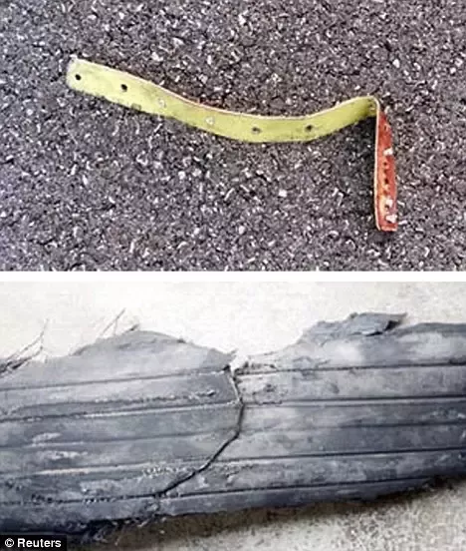

Accidentul de la Paris
Aerospatiale-BAC Concorde a fost primul avion supersonic de pasageri.
A fost rezultatul unui tratat guvernamental încheiat între guvernul
francez și britanic.
Zburând pentru prima oară în 1969, Concorde și-a început serviciul
comercial în 1976 și a continuat timp de 27 de ani.
Ca urmare a unicului accident din 25 iulie 2000, a efectelor economice
ce au urmat evenimentelor din 11 septembrie 2001 și a altor factori,
zborurile au încetat la 24 octombrie 2003. Ultimul zbor a avut loc pe
24 noiembrie în același an.
Pe 25 iulie 2000, zborul Air France 4590, înmatriculat
F-BTSC(Foxtrot-Bravo Tango Sierra Charlie) se prăbușește în Gonesse,
Franța, omorând toți cei 100 de pasageri, 9 membri ai echipajului și 4
persoane la sol.
A fost singurul accident cu victime al acestui tip de avion. Potrivit
anchetei oficiale condusă de Biroul de investigare al accidentelor din
Franța (BEA), accidentul a fost cauzat de o lamelă de titan, parte a
unui invertor de putere , căzut de la avionul DC-10 al companiei
Continental Airlines ce decolase cu circa 4 minute mai devreme.

Acest fragment metalic a cauzat explozia unui cauciuc al trenului de
aterizare stâng. O bucată din cauciucul explodat a lovit rezervorul de
combustibil și a rupt un cablu electric. Impactul a cauzat o undă de
șoc hidrodinamică care a fisurat rezervorul în apropierea zonei de
impact. Această fisură a provocat o pierdere masivă de combustibil
care s-a aprins de la cablurile avariate care produceau scântei.
Echipajul a oprit motorul numărul 2 în urma alarmei de incendiu, dar
nu au putut să ridice trenul de aterizare, îngreunându-se ascensiunea
aparatului. Rămas fără putere, avionul a intrat în picaj,
prăbușindu-se într-un hotel din Gonesse.